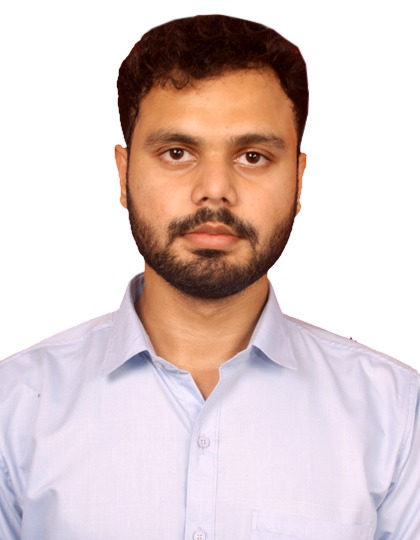

Education
Bachelor of Science – IIT Madras
2024 – 2027
B.Tech in Computer Science – IILM University
2023 – 2027
S.T. Joseph’s Convent School
Class 10 (2020) | Class 12 (2022)
IIT Madras | Python • ML • Data Analytics
⬇ Download Resume
I am a highly motivated and goal-oriented Data Science and Machine Learning student currently pursuing a Bachelor of Science degree from the Indian Institute of Technology Madras along with a Bachelor of Technology in Computer Science. My academic journey is deeply rooted in my curiosity about how data, algorithms, and software systems interact to solve real-world problems. From an early stage, I have been fascinated by technology and its ability to drive impactful change across industries such as healthcare, finance, education, and e-commerce.
Throughout my academic life, I have consistently focused on developing strong fundamentals in programming, problem-solving, and analytical thinking. I enjoy breaking down complex problems into smaller components and building structured solutions using code. My exposure to Python, Java, and C has allowed me to understand both high-level abstractions and low-level system behavior, which has significantly improved my overall programming maturity.
I have a strong inclination toward data science and machine learning, where I enjoy working with datasets, exploring patterns, and building predictive models. I have worked extensively with libraries such as NumPy, Pandas, Matplotlib, Seaborn, and Scikit-learn, and I am comfortable performing tasks such as data cleaning, feature engineering, model training, evaluation, and optimization. I believe that data-driven decision-making plays a critical role in modern software systems.
Beyond academics, I strongly believe in learning through practical exposure. I actively build projects that integrate machine learning models with backend systems and deploy them as usable applications. Working on such end-to-end systems has helped me understand the complete lifecycle of software development, from problem definition and data collection to deployment and user interaction.
My internship experience at IIT Hyderabad further strengthened my practical understanding of data science workflows. Working with real datasets taught me the importance of data quality, exploratory analysis, and effective visualization. I also learned how to collaborate in professional environments, communicate insights clearly, and work efficiently under guidance.
Looking ahead, my long-term objective is to build a strong career in data science, machine learning, or software engineering, where I can continuously learn, innovate, and contribute to impactful technology solutions. I am highly motivated, adaptable, and always eager to take on challenging problems that help me grow as a professional.
Over the years, I have developed a well-rounded technical skill set that spans programming, data analysis, machine learning, and backend development. My skill set enables me to design, implement, and deploy complete data-driven applications.
The Medical Recommendation System is a machine learning–based healthcare support application designed to predict potential diseases based on user-entered symptoms and provide relevant medical recommendations. The project aims to demonstrate the application of machine learning techniques in solving real-world healthcare challenges.
I worked on preprocessing medical datasets, handling missing values, encoding categorical features, and training supervised learning models using Scikit-learn. A Flask-based backend was developed to integrate the trained model with a user-friendly web interface.
This project strengthened my understanding of end-to-end ML pipelines, backend integration, and real-world deployment challenges.
📄 Download Project ReportA Flask-based web application that dynamically generates QR codes for user-provided text and URLs. This project improved my backend development skills and reinforced concepts related to routing, request handling, and application structure.
July 2025 – August 2025
During my internship, I worked on real-world datasets involving data cleaning, preprocessing, exploratory data analysis, and visualization. I assisted in building analytical reports that supported data-driven decision-making.
This experience enhanced my confidence in working with real data, improved my teamwork skills, and strengthened my interest in applied data science and machine learning.
2024 – 2027
2023 – 2027
Class 10 (2020) | Class 12 (2022)
Email: manas150309@gmail.com
LinkedIn: linkedin.com/in/manas-gupta-iit-m